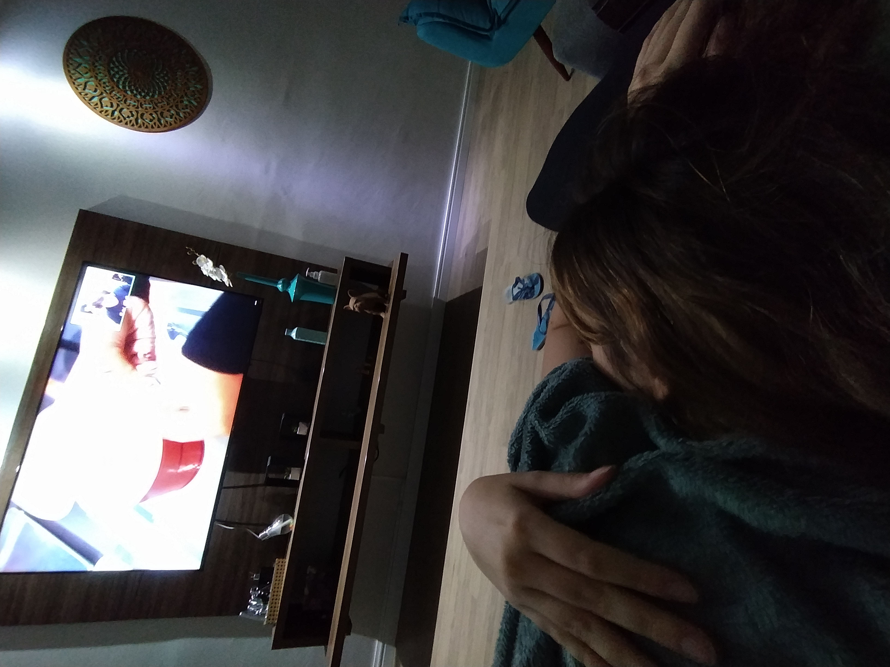
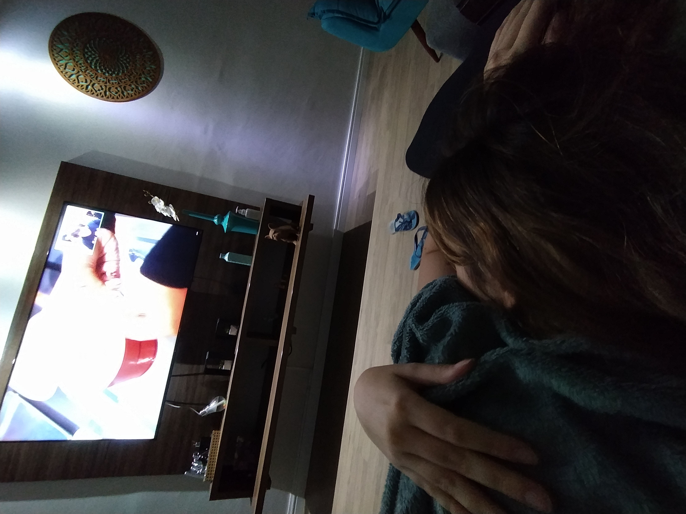
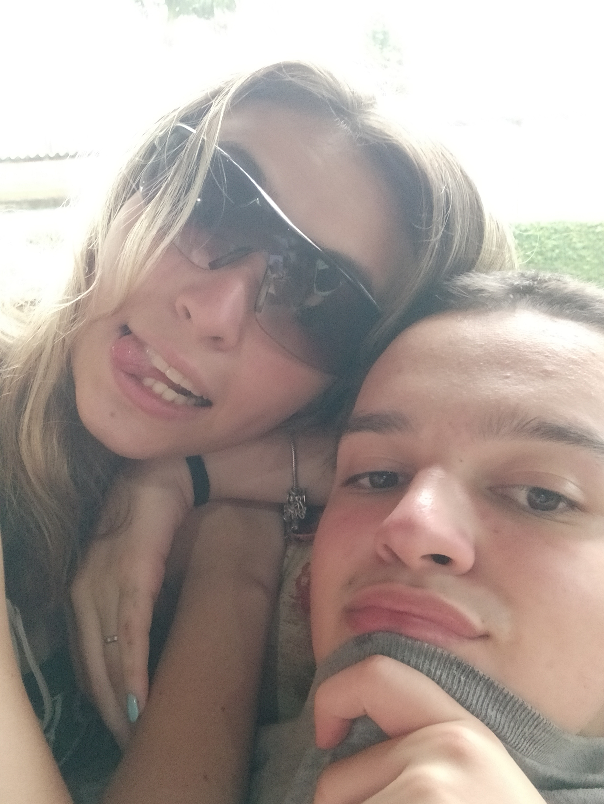
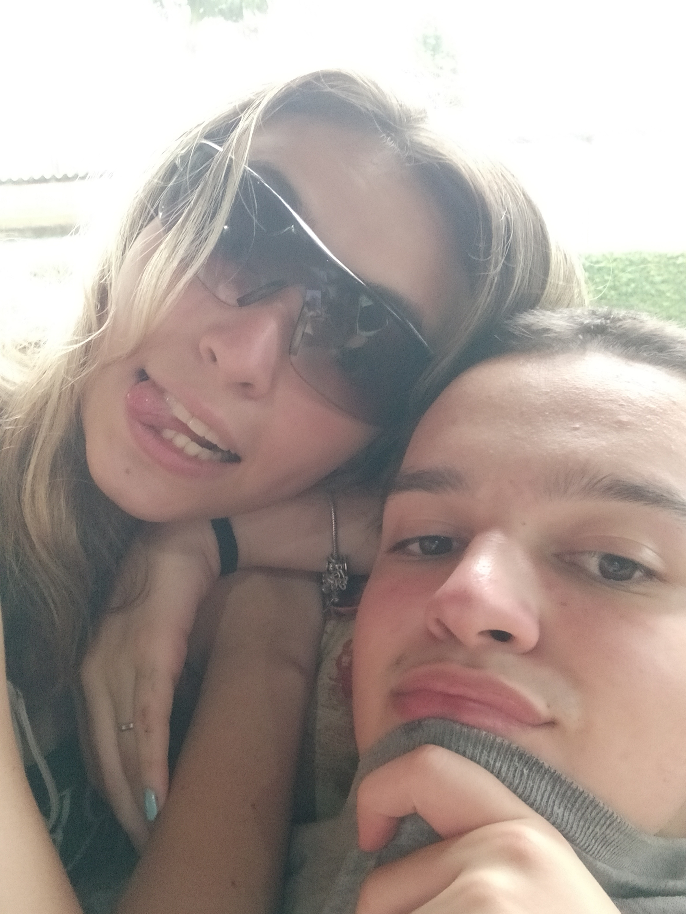

Bom, então depois de tudo isso creio que tenha chego a minha hora de te dizer algumas palavras... Você chegou na minha vida de repente, eu nem sequer imaginava que a gente fosse se ver depois que acabasse a escola, mas graças a Deus, os acasos da vida fizeram com que nós nos encontrássemos. E mesmo assim, com a vida jogando na minha cara o meu destino, eu hesitei, por pura insegurança quase perco a oportunidade da minha vida de me apaixonar por você (pela segunda vez) essa mesma insegurança quase fez com que eu não me declarasse pra você, porém fico muito feliz que essa frase esteja cheia de quases, pois sem eles minha vida hoje estaria totalmente incompleta, e o pior, eu nem entenderia o motivo.
Com você essa insegurança simplesmente sumiu, você consegue fazer o que ninguém nunca conseguiu, com você eu me sinto confortável para fazer e dizer o que eu quiser, com você e somente com você eu posso ser eu mesmo, não há lugar no mundo que eu me sinta mais confortável que ao seu lado e isso não é da boca pra fora, eu juro que ficar com você, pra mim é a sensação mais gostosa e maravilhosa que existe na terra.
Desde o dia em que te vi pela primeira vez, sempre achei muito bonitinho o seu jeito feliz e inocente de levar a vida, sempre falando o que quer e o que gosta sem se inibir pela vergonha ou medo de rejeição, acho que esse foi um dos fatores que fez com que eu me apaixonasse por você. Você é única, nunca deixe que ninguém te faça pensar o contrário, você é capaz de fazer tudo o que quiser, você sempre luta pelo que você quer, você sabe o que você quer e isso tudo é encantador de se ver, as vezes fico com dó quando você ta se matando de estudar, ou ta focada em fazer alguma coisa de pros seus alunos mas ao mesmo tempo, sempre me bate um orgulho imenso em ter o privilégio de te namorar. Privilégio que eu espero ter para sempre, e vou fazer questão de deixar isso bem claro. Só você, dentre todas as pessoas existentes e que virão a existir, só você me completa do jeito que faz, eu te amo com todo meu coração pra sempre, chuchu <3.
 


 
